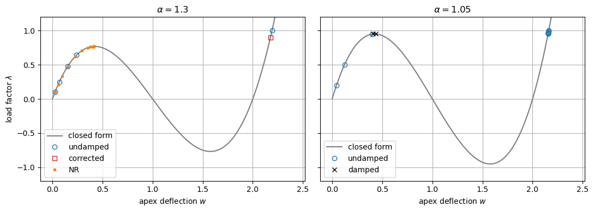

Stabilized Newton-Raphson method past a limit point#
The load-controlled Newton-Raphson method fails where there is no equilibrium near the last converged state at a larger load factor: at a limit point, a local fold of the equilibrium path or a jump to another buckling pattern. NL_method='stabilized_NR', described in stabilized_newton_raphson._solver_stabilized_NR, keeps the load control and solves each increment in up to three stages:
the Newton-Raphson iterations of \(\boldsymbol{R} = \boldsymbol{F}_{int}(\boldsymbol{c}) - \lambda_{n+1} \boldsymbol{F}_{ext} = \boldsymbol{0}\);
if they fail, the iterations of the equilibrium with viscous forces in the pseudo-time of the load factor,
with \(\boldsymbol{D}\) the absolute values of the diagonal of the linear stiffness matrix and \(\mu\) = Analysis.stabilization_factor;
if these converge, the Newton-Raphson iterations of \(\boldsymbol{R}\) again, from the damped state.
Analysis.stabilization_status records each accepted state as 'undamped' (stage 1), 'corrected' (stage 3), both equilibria to the tolerance, or 'damped' (stage 3 failed), a state that is not an equilibrium, whose relative residual is in Analysis.damped_residuals.
This notebook uses the von Mises truss of tests/analytic_problems.py, whose equilibrium path is known in closed form, loaded beyond its limit load.
[1]:
%matplotlib inline
import os
import sys
# the helper functions of the tests are imported from the folder tests/
sys.path.insert(0, os.path.join('..', 'tests'))
import numpy as np
import matplotlib.pyplot as plt
from structsolve.convergence import crisfield_weights, crisfield_zeta
from analytic_problems import von_mises_truss
The model and the closed-form references#
The apex deflection \(w\) (DOF 0) of the shallow truss has the internal force \(f(w) = w^3 - 3 w^2 + 2 w\), and the truss is loaded through a spring of stiffness \(k_s = 10\) by the force \(\lambda \alpha F_{lim}\), a multiple \(\alpha\) of the limit load \(F_{lim} = 2/(3\sqrt{3})\), reached at \(w_{lim} = 1 - 1/\sqrt{3}\). Along the equilibrium path \(\lambda(w) = f(w)/(\alpha F_{lim})\): the load factor reaches its maximum \(1/\alpha\) at the limit point and, for \(\alpha > 1\), the only equilibrium at \(\lambda = 1\) is on the inverted configuration, the largest real root of \(f(w) = \alpha F_{lim}\). Under load control the solution must jump from the limit point to the inverted configuration.
[2]:
F_LIM = 2/(3*np.sqrt(3))
W_LIM = 1 - 1/np.sqrt(3)
def w_final(frac):
# apex deflection at lambda = 1: the largest real root of the cubic
r = np.roots([1., -3., 2., -frac*F_LIM])
return r[np.abs(r.imag) < 1e-12].real.max()
def zeta(p, lbd, c):
# Crisfield's relative residual of the undamped equilibrium
fint = p.fint(c)
return crisfield_zeta(fint - lbd*p.fext, lbd*p.fext, fint,
crisfield_weights(p.kC))
def run(frac, initialInc, **kwargs):
p = von_mises_truss(frac=frac, ks=10.)
p.analysis(initialInc=initialInc, **kwargs)
p.an.static(NLgeom=True, silent=True)
return p
def print_states(p):
an = p.an
print(f"{'inc':>3} {'lambda':>8} {'w':>8} {'status':>9} {'zeta':>9}")
for i, (lbd, c, s) in enumerate(zip(an.increments, an.cs,
an.stabilization_status)):
print(f'{i:3d} {lbd:8.5f} {c[0]:8.5f} {s:>9} {zeta(p, lbd, c):9.2e}')
Newton-Raphson stops at the limit point#
With \(\alpha = 1.3\) and load increments starting at 0.1, the plain method converges up to the limit point, \(\lambda = 1/1.3 = 0.7692\), then cuts every increment down to minInc and stops:
[3]:
frac = 1.3
nr = run(frac, 0.1, NL_method='NR')
print(f'NR: {len(nr.an.increments)} increments, last load factor '
f'{nr.an.increments[-1]:.5f} (limit point {1/frac:.5f}), '
f'w = {nr.an.cs[-1][0]:.5f} (w_lim = {W_LIM:.5f}), '
f'{len(nr.fint_calls)} evaluations of fint')
NR: 12 increments, last load factor 0.76918 (limit point 0.76923), w = 0.41870 (w_lim = 0.42265), 152 evaluations of fint
The stabilized method passes it#
The same analysis with NL_method='stabilized_NR' and the default \(\mu = 10^{-5}\): the increment that fails at stage 1 converges with the viscous forces and is corrected to the equilibrium on the inverted configuration, after which the plain iterations converge again up to \(\lambda = 1\). Every accepted state satisfies the undamped equilibrium, \(\zeta \le\) relTOL \(= 10^{-9}\):
[4]:
st = run(frac, 0.1, NL_method='stabilized_NR')
print(f'stabilized_NR: {len(st.an.increments)} increments, '
f'{len(st.fint_calls)} evaluations of fint, '
f'stabilization_factor = {st.an.stabilization_factor:g}')
print_states(st)
w_ref = w_final(frac)
w = st.an.cs[-1][0]
print(f'\nw at lambda = 1: computed {w:.10f}, closed form {w_ref:.10f}, '
f'rel. diff. {abs(w - w_ref)/w_ref:.2e}')
stabilized_NR: 6 increments, 113 evaluations of fint, stabilization_factor = 1e-05
inc lambda w status zeta
0 0.10000 0.02603 undamped 1.37e-10
1 0.25000 0.06966 undamped 2.22e-16
2 0.47500 0.15155 undamped 4.64e-12
3 0.64375 0.24149 undamped 1.40e-15
4 0.89688 2.17549 corrected 7.57e-13
5 1.00000 2.19160 undamped 1.64e-15
w at lambda = 1: computed 2.1916014756, closed form 2.1916014756, rel. diff. 4.05e-16
Damped-only states#
The result depends on the load, on \(\mu\) and on the increments. With \(\alpha = 1.05\), load increments starting at 0.2 and the default \(\mu\), the plain method stops at the limit point, \(\lambda = 1/1.05 = 0.9524\), and the stabilized method passes it, but the correction fails at two increments after the limit point: their damped states are kept and flagged. Their residual is the viscous force,
\(\boldsymbol{R} = -(\mu/\Delta\lambda) \boldsymbol{D} (\boldsymbol{c} - \boldsymbol{c}_n)\) to the tolerance, and damped_residuals gives its relative size, here 0.11 % and 0.31 %: these states are not equilibria, and they lie off the equilibrium path, beyond the limit load. From the last damped state the plain iterations of the next increment converge on the inverted configuration, and the analysis reaches its equilibrium at \(\lambda = 1\):
[5]:
frac2 = 1.05
dm = run(frac2, 0.2, NL_method='stabilized_NR')
mu = dm.an.stabilization_factor
print(f'stabilized_NR: {len(dm.an.increments)} increments, '
f'{len(dm.fint_calls)} evaluations of fint')
print_states(dm)
nr2 = run(frac2, 0.2, NL_method='NR')
print(f'NR: last load factor {nr2.an.increments[-1]:.5f}')
D = np.abs(np.diag(dm.kC))
an = dm.an
lbds = [0.] + an.increments
cs = [np.zeros(2)] + an.cs
print()
for i, s in enumerate(an.stabilization_status):
if s == 'damped':
R = dm.fint(cs[i + 1]) - lbds[i + 1]*dm.fext
viscous = mu/(lbds[i + 1] - lbds[i])*D*(cs[i + 1] - cs[i])
print(f'inc {i:2d}: damped_residuals = {an.damped_residuals[i]:.3e}, '
f'max|R + viscous force| / max|viscous force| = '
f'{np.abs(R + viscous).max()/np.abs(viscous).max():.1e}')
w_ref2 = w_final(frac2)
print(f'\nw at lambda = 1: computed {an.cs[-1][0]:.10f}, closed form '
f'{w_ref2:.10f}, rel. diff. {abs(an.cs[-1][0] - w_ref2)/w_ref2:.2e}')
stabilized_NR: 14 increments, 377 evaluations of fint
inc lambda w status zeta
0 0.20000 0.04317 undamped 9.30e-16
1 0.50000 0.12269 undamped 1.47e-12
2 0.95000 0.39924 undamped 1.84e-15
3 0.95313 0.40846 damped 1.14e-03
4 0.95625 0.43353 damped 3.08e-03
5 0.95781 2.15543 undamped 3.86e-13
6 0.95938 2.15564 undamped 7.21e-15
7 0.96094 2.15585 undamped 9.44e-14
8 0.96328 2.15617 undamped 3.13e-13
9 0.96680 2.15664 undamped 1.48e-12
10 0.97207 2.15734 undamped 7.43e-12
11 0.97998 2.15840 undamped 3.70e-11
12 0.99185 2.15998 undamped 1.83e-10
13 1.00000 2.16107 undamped 8.65e-11
NR: last load factor 0.95230
inc 3: damped_residuals = 1.142e-03, max|R + viscous force| / max|viscous force| = 1.0e-06
inc 4: damped_residuals = 3.083e-03, max|R + viscous force| / max|viscous force| = 8.8e-09
w at lambda = 1: computed 2.1610686292, closed form 2.1610686292, rel. diff. 5.82e-12
The paths#
The closed-form equilibrium path \(\lambda(w)\), with the states of the plain and of the stabilized method. The stabilized states jump at the limit load from the softening branch to the inverted configuration; the damped-only states lie off the equilibrium path.
[6]:
fig, axes = plt.subplots(1, 2, figsize=(11, 4), sharey=True)
ws = np.linspace(0., 2.4, 400)
markers = {'undamped': ('o', 'C0'), 'corrected': ('s', 'C3'),
'damped': ('x', 'k')}
for ax, f, p, title in ((axes[0], frac, st, r'$\alpha = 1.3$'),
(axes[1], frac2, dm, r'$\alpha = 1.05$')):
ax.plot(ws, (ws**3 - 3*ws**2 + 2*ws)/(f*F_LIM), 'C7-',
label='closed form')
for s, (m, col) in markers.items():
pts = [(c[0], l) for l, c, si in zip(p.an.increments, p.an.cs,
p.an.stabilization_status)
if si == s]
if pts:
x, y = np.array(pts).T
ax.plot(x, y, m, color=col, label=s, mfc='none')
ax.set_xlabel('apex deflection $w$')
ax.set_title(title)
ax.set_ylim(-1.2, 1.2)
ax.grid(True)
axes[0].plot([c[0] for c in nr.an.cs], nr.an.increments, '.', color='C1',
label='NR')
axes[0].set_ylabel(r'load factor $\lambda$')
axes[0].legend()
axes[1].legend()
plt.tight_layout()

Stability of the accepted states#
The scheme finds an equilibrium beyond the jump, not necessarily the one a dynamic process reaches, and it does not check its stability. With inertia=True the sign of the determinant of the tangent stiffness matrix is recorded at every accepted state. It is \(+1\) at every state here, which a stable state requires; an even number of negative eigenvalues gives the same sign, and their count requires linear_solver='pardiso' or inertia_num_eigvals.
[7]:
si = run(frac, 0.1, NL_method='stabilized_NR', inertia=True)
for lbd, c, s, d in zip(si.an.increments, si.an.cs,
si.an.stabilization_status, si.an.det_signs):
print(f'lambda {lbd:.5f}, w {c[0]:8.5f}, {s:>9}, det sign {d:+d}')
lambda 0.10000, w 0.02603, undamped, det sign +1
lambda 0.25000, w 0.06966, undamped, det sign +1
lambda 0.47500, w 0.15155, undamped, det sign +1
lambda 0.64375, w 0.24149, undamped, det sign +1
lambda 0.89688, w 2.17549, corrected, det sign +1
lambda 1.00000, w 2.19160, undamped, det sign +1